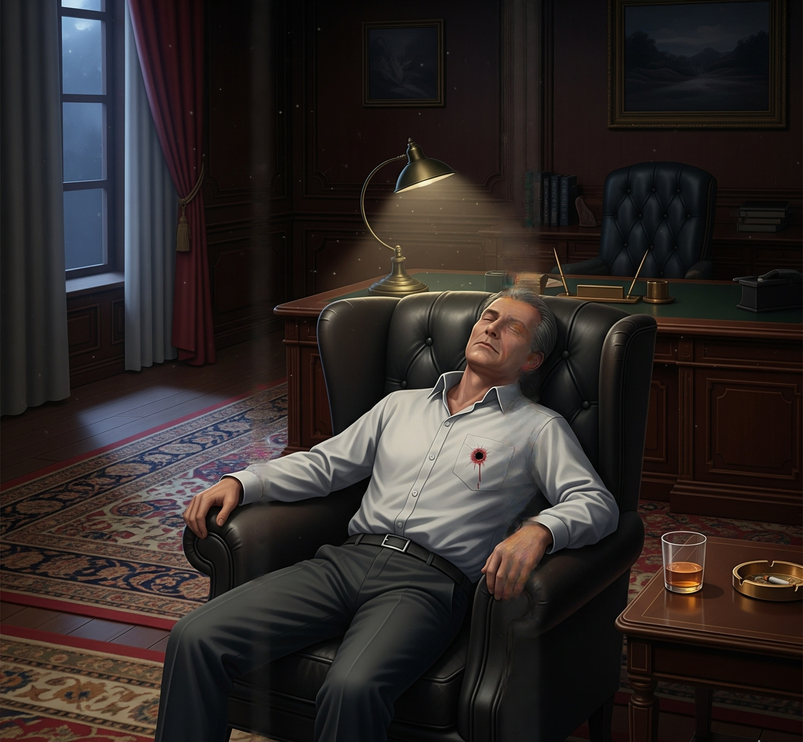

RELATÓRIO DE OCORRÊNCIA #9902
Marcus Thorne (62), magnata da indústria farmacêutica, foi encontrado sem vida em sua biblioteca pessoal às 20:30, logo após o restabelecimento da energia elétrica, que havia sido cortada cerca de 30 minutos antes.
A atmosfera na casa é de pesar e confusão. Todos os sete suspeitos permanecem no local. Ordenei a apreensão imediata de todos os dispositivos móveis. As conversas parecem normais à primeira vista, repletas de dramas familiares e profissionais, mas a ordem é clara: encontre a inconsistência que revela o assassino.
NOTA DO LEGISTA: "Não se deixe levar pelo óbvio. O buraco de bala no peito é evidente, mas meu exame preliminar do sangue mostra algo muito mais complexo e silencioso. O tempo da morte biológica não bate com o tempo do disparo."
Selecione um dispositivo.
RELATÓRIO DE AUTOPSIA #9902-B
RESUMO: A cena sugere homicídio por arma de fogo, mas a biologia conta outra história.
Orifício de entrada no hemitórax esquerdo. Tatuagem de pólvora presente (tiro à queima-roupa).
Achado Patológico: As bordas da ferida estão pálidas, brancas. Não há sangue infiltrado nos tecidos ao redor. O coração estava parado quando a bala o atingiu.
Conclusão 1: O tiro foi disparado post-mortem.
Conclusão 2: Parada cardiorrespiratória induzida por intoxicação digitálica aguda.